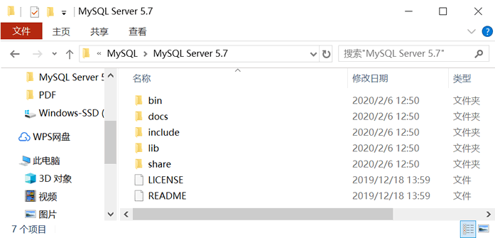
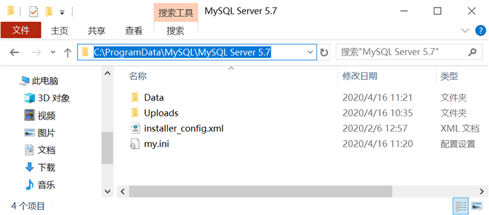
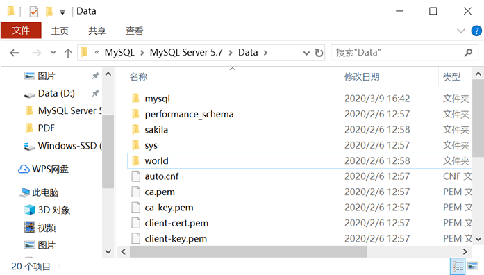

首页 > MySQL教程 > MySQL的安装和配置
MySQL安装后的目录结构介绍
MySQL 安装完成后，会在磁盘上生成一个目录，该目录就被称为 MySQL 的安装目录。
MySQL 的安装目录包含一些子目录以及一些后缀名为
MySQL 5.7 版本的安装配置后，目录结构可能如下图所示：
注意：MySQL 5.7 的 Data 目录和 my.ini 文件有时并不放在 MySQL 的安装目录下，而是在
下面介绍 MySQL 安装目录的作用。
Data 目录中用于放置一些日志文件以及数据库。我们创建和保存的数据都存在这个目录里。打开 Data 目录，结构如下图所示：
以上数据库都是安装 MySQL 时，系统自动创建的，我们在《MySQL查看或显示数据库》一节介绍了它们。
除了上述介绍的目录，MySQL 安装目录下可能还有几个后缀名为
my.ini 是 MySQL 默认使用的配置文件，其它的配置文件都是适合不同数据库的配置文件的模板，在文件名中就说明了适合的数据库类型，下面对这几个配置文件进行详细讲解。
MySQL 的安装目录包含一些子目录以及一些后缀名为
.ini的配置文件。为了更好地学习 MySQL，初学者必须要对 MySQL 安装目录下各个子目录的意义和作用有所了解。下面对 MySQL 的安装目录进行详细讲解。 MySQL 5.7 版本的安装配置后，目录结构可能如下图所示：


注意：MySQL 5.7 的 Data 目录和 my.ini 文件有时并不放在 MySQL 的安装目录下，而是在
C:\ProgramData\MySQL\MySQL Server 5.7 下（如上图所示）。一般情况下，C 盘下的 ProgramData 目录是隐藏的，需要取消隐藏。下面介绍 MySQL 安装目录的作用。
1）bin 目录
用于放置一些可执行文件，如 mysql.exe、mysqld.exe、mysqlshow.exe 等。2）docs 目录
存放一些文档3）Data 目录
登录数据库后，可使用SHOW GLOBAL VARIABLES LIKE "%Datadir%"; 命令查看 Data 目录位置。Data 目录中用于放置一些日志文件以及数据库。我们创建和保存的数据都存在这个目录里。打开 Data 目录，结构如下图所示：

以上数据库都是安装 MySQL 时，系统自动创建的，我们在《MySQL查看或显示数据库》一节介绍了它们。
4）include 目录
用于放置一些头文件，如：mysql.h、mysql_ername.h 等。5）lib 目录
用于放置一系列库文件6）share 目录
用于存放字符集、语言等信息7）my.ini 文件
my.ini 是 MySQL 默认使用的配置文件，一般情况下，只要修改 my.ini 配置文件中的内容就可以对 MySQL 进行配置。除了上述介绍的目录，MySQL 安装目录下可能还有几个后缀名为
.ini的配置文件，不同的配置文件代表不同的含义。my.ini 是 MySQL 默认使用的配置文件，其它的配置文件都是适合不同数据库的配置文件的模板，在文件名中就说明了适合的数据库类型，下面对这几个配置文件进行详细讲解。
- my-huge.ini：适合超大型数据库的配置文件。
- my-large.ini：适合大型数据库的配置文件。
- my-medium.ini：适合中型数据库的配置文件。
- my-small.ini：适合小型数据库的配置文件。
- my-template.ini：是配置文件的模板，MySQL 配置向导将该配置文件中选择项写入到 my.ini 文件。
- my-innodb-heavy-4G.ini：表示该配置文件只对于 InnoDB 存储引擎有效，而且服务器的内存不能小于 4GB。
关注公众号「站长严长生」，在手机上阅读所有教程，随时随地都能学习。内含一款搜索神器，免费下载全网书籍和视频。

微信扫码关注公众号